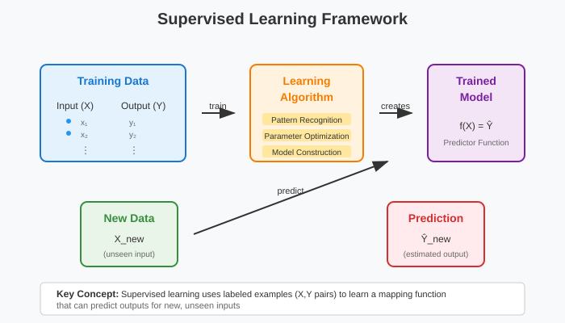
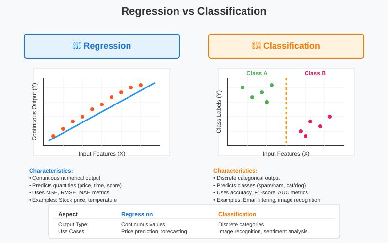

Introduction to Supervised Learning: Regression Fundamentals
Quick Navigation
- Course Overview
- Fundamental Concepts
- Regression vs Classification
- Medical Diagnosis Example
- Machine Learning Pipeline
- Mathematical Notation
- Linear Regression Fundamentals
- Implementation and Practice
- Advanced Topics
- References & Further Reading
Course Overview
This comprehensive guide explores the foundational concepts of supervised learning with emphasis on regression methods for predictive modeling. These principles form the mathematical backbone for advanced AI systems, including modern generative models used by OpenAI's GPT series, Google's PaLM, and Microsoft's Azure AI platforms.
Learning Objectives
- Master the core principles of supervised learning and regression analysis
- Understand the mathematical framework underlying linear predictors used in neural networks
- Distinguish between regression and classification methodologies in modern AI systems
- Apply regression techniques to real-world business problems similar to those at Meta and Google
- Implement proper mathematical notation conventions used in AI research
- Develop intuition for model interpretation and limitations in production systems
Prerequisites
- Basic understanding of linear algebra and statistics
- Familiarity with Python programming and data science libraries
- Elementary knowledge of data visualization concepts
- Understanding of mathematical notation used in machine learning research
🔵 Fundamental Concepts of Supervised Learning
Core Definition and Framework
Supervised learning represents a machine learning paradigm where algorithms learn from labeled training examples to make predictions on new, unseen data. This foundational approach underlies major AI breakthroughs including OpenAI's language models, Google's computer vision systems, and Microsoft's recommendation engines.
The "supervised" aspect indicates that the learning process is guided by known input-output pairs, enabling algorithms to understand relationships between features and target variables.

Mathematical Foundation
The supervised learning framework operates with labeled datasets where each example consists of:
- Input vectors: X₁, X₂, ..., Xₙ (features/attributes)
- Output values: Y₁, Y₂, ..., Yₙ (labels/targets)
- Learning objective: Discover function f(X) that accurately maps inputs to outputs
The Prediction Process
The fundamental prediction workflow involves four critical stages:
- Training Phase: Algorithm analyzes labeled examples to identify patterns
- Model Development: Mathematical relationships are established between X and Y
- Prediction Phase: For new input X, the model generates corresponding Y prediction
- Validation: Model performance is assessed using unseen test data
This process forms the foundation for modern AI systems used in industry applications ranging from Netflix's recommendation algorithms to Tesla's autonomous driving systems.
Real-World Applications in Generative AI
Supervised learning powers numerous cutting-edge AI applications:
- Large Language Models: GPT-4, Claude, and PaLM use supervised training on vast text corpora
- Computer Vision: DALL-E 2, Midjourney, and Stable Diffusion employ supervised learning on image-text pairs
- Multimodal Systems: GPT-4V and Google's Bard integrate supervised learning across text, image, and audio modalities
- Code Generation: GitHub Copilot and CodeT5 utilize supervised learning on code repositories
🟢 Regression vs Classification: Core Distinctions
Fundamental Differences
Understanding the distinction between regression and classification is crucial for selecting appropriate machine learning approaches in modern AI development.

| Aspect | Regression | Classification |
|---|---|---|
| Output Type | Continuous numerical values | Discrete categories/classes |
| Prediction Goal | Estimate quantities (price, probability) | Determine categories (sentiment, object type) |
| Mathematical Approach | Minimize continuous error functions | Maximize classification accuracy |
| Error Measurement | MSE, RMSE, MAE | Accuracy, F1-Score, AUC-ROC |
| Example Applications | Stock prediction, temperature forecasting | Image classification, spam detection |
| Loss Functions | L1, L2, Huber loss | Cross-entropy, hinge loss |
🔵 Regression Applications in Modern AI
Regression techniques excel in quantitative prediction scenarios across major tech companies:
- Financial Technology: Square and PayPal use regression for fraud risk scoring and transaction amount prediction
- Autonomous Vehicles: Tesla and Waymo employ regression for steering angle prediction and speed control
- Content Recommendation: YouTube and TikTok utilize regression for engagement time prediction and content ranking
- Generative AI: OpenAI's GPT models use regression-like objectives for next-token probability prediction
🔴 Classification Applications in AI Systems
Classification handles categorical decision-making in production systems:
- Natural Language Processing: Sentiment analysis in Twitter's content moderation and Google's search quality
- Computer Vision: Object detection in Facebook's photo tagging and Apple's facial recognition
- Content Moderation: Automated content classification systems at YouTube, TikTok, and Meta
- Medical AI: Diagnostic classification systems developed by Google Health and Microsoft Healthcare Bot
Linear Predictors in Practice
Linear regression uses mathematical functions to model relationships between variables. The core principle involves:
Y = θ₀ + θ₁X₁ + θ₂X₂ + ... + θₘXₘ
When new data point X arrives, the algorithm:
- Computes the linear combination of features with learned weights
- Applies the mathematical function to generate predictions
- Returns quantitative estimates for regression or probability scores for classification
This foundational approach underlies more complex models, including the transformer architectures used in ChatGPT, Claude, and other large language models.
🟢 Medical Diagnosis: Supervised Learning Example
Clinical Decision-Making Framework
Consider a physician examining patients in a modern healthcare AI system similar to those developed by Google Health or Microsoft's Healthcare Bot. Each patient presents comprehensive medical data:
- Input Vector X: Multi-dimensional medical data including symptoms, vital signs, laboratory results, imaging findings, and patient history
- Target Variable Y: Health status, diagnostic outcome, or treatment recommendation

The Training Process in Healthcare AI
Medical AI systems learn through extensive supervised training:
- Historical Patient Data: Thousands of labeled medical records from electronic health systems
- Pattern Recognition: Identifying complex correlations between symptoms, biomarkers, and diagnoses
- Model Validation: Testing predictions against known clinical outcomes and expert physician assessments
- Continuous Learning: Updating models with new clinical evidence and treatment outcomes
Two Prediction Types in Healthcare
🔴 Classification Examples
- Binary Decision: Determining if patient has specific disease (COVID-19 positive/negative)
- Multi-class Diagnosis: Identifying specific condition from multiple possibilities (pneumonia, flu, bronchitis)
- Risk Stratification: Categorizing patients into risk groups (low, medium, high cardiac risk)
🔵 Regression Examples
- Continuous Prediction: Estimating life expectancy, recovery time, or treatment efficacy scores
- Biomarker Prediction: Forecasting blood glucose levels, blood pressure trends, or medication dosages
- Resource Planning: Predicting length of hospital stay or rehabilitation duration
Clinical Implementation Standards
Modern healthcare AI systems following FDA and regulatory guidelines demonstrate supervised learning applications in:
- Diagnostic Imaging: Google's DeepMind eye disease detection and Microsoft's Project InnerEye for cancer treatment
- Drug Discovery: Partnerships between pharmaceutical companies and AI firms like DeepMind's AlphaFold for protein structure prediction
- Personalized Medicine: Integration with genomic data for precision treatment recommendations
- Clinical Decision Support: Real-time risk assessment and treatment optimization in electronic health records
🔵 Machine Learning Pipeline: Two Approaches
Direct Prediction Approach
This streamlined methodology focuses purely on predictive accuracy and is commonly used in production systems at major tech companies:
Training Data → ML Algorithm → Trained Model → New Data → Prediction
Characteristics: - Emphasis on prediction performance over interpretability - Model acts as optimized function for generating outputs - Common in deep learning systems like GPT-4, DALL-E, and recommendation engines - Optimal for applications prioritizing accuracy over explanation (e.g., search rankings, content recommendations)
Industry Examples: - Netflix: Content recommendation algorithms optimizing for user engagement - Google Search: PageRank and neural ranking models prioritizing search relevance - Tesla Autopilot: End-to-end neural networks for autonomous driving decisions
Statistical Modeling Approach
This comprehensive methodology emphasizes understanding mechanisms and is preferred in research and regulated industries:
Training Data → Statistical Analysis → Probabilistic Model → Interpretation → Prediction
Characteristics: - Creates probabilistic models explaining X-Y relationships with uncertainty quantification - Enables causal inference and mechanism understanding - Provides confidence intervals and statistical significance testing - Essential for scientific research, medical applications, and regulatory compliance
Industry Applications: - Clinical Trials: Pharmaceutical companies like Pfizer and Moderna use statistical models for drug efficacy analysis - Financial Risk: Banks and fintech companies employ statistical models for credit risk assessment and regulatory reporting - Scientific Research: Academic institutions and research labs use statistical approaches for hypothesis testing and discovery
Convergence in Linear Regression
Both approaches yield mathematically identical results in linear regression contexts, but differ significantly in:
- Interpretation: Direct prediction focuses on accuracy metrics; statistical modeling emphasizes parameter significance and confidence intervals
- Application: Production systems vs research environments and regulatory compliance
- Validation: Cross-validation and holdout testing vs statistical hypothesis testing and p-values
- Communication: Stakeholder requirements for explainability and regulatory documentation
This convergence makes linear regression an ideal foundation for understanding both machine learning and statistical approaches to prediction, bridging the gap between modern AI systems and traditional statistical analysis.
🟢 Mathematical Notation and Conventions
Vector Representation Standards
Understanding mathematical notation is crucial for reading AI research papers from companies like OpenAI, Google DeepMind, and Microsoft Research.
Basic Notation Rules
| Symbol Type | Representation | Example | Meaning |
|---|---|---|---|
| Boldface | Vectors | X = [X₁, X₂, X₃]ᵀ | Multi-dimensional data |
| Normal Font | Scalars | Y, n, β, θ | Single values |
| Subscripts | Position/Index | X₂, θᵢ | Second observation, i-th parameter |
| Superscripts | Powers/Transpose | Xᵀ, X² | Transpose, squared |
Vector Operations
Column Vector Standard:
X = [X₁] [X₂] [X₃]
Transpose Operation:
Xᵀ = [X₁ X₂ X₃]
Inner Product Calculation: For vectors X and Y:
XᵀY = X₁Y₁ + X₂Y₂ + X₃Y₃
Statistical Parameter Notation
| Symbol | Meaning | Context | Example |
|---|---|---|---|
| θ* | True parameter value | Population parameter | True population mean |
| θ̂ | Estimated parameter | Sample statistic | Maximum likelihood estimate |
| n | Sample size | Dataset dimension | Number of training examples |
| lowercase | Realized values | Observed data | Actual measurement y |
| UPPERCASE | Random variables | Theoretical construct | Random variable Y |
Modern AI Notation Extensions
Contemporary AI research extends traditional notation:
- W, b: Weight matrices and bias vectors in neural networks
- L(·): Loss functions (cross-entropy, MSE)
- ∇: Gradient operator for backpropagation
- α: Learning rate in gradient descent
- λ: Regularization parameters
Practical Implementation
These conventions ensure consistency across:
- Research Publications: Standardized mathematical communication in NIPS, ICML, ICLR conferences
- Software Implementation: Clear variable naming in TensorFlow, PyTorch, and JAX codebases
- Model Documentation: Unambiguous parameter definitions in model cards and technical reports
- Team Collaboration: Shared understanding between research scientists and ML engineers
🔵 Linear Regression Fundamentals
Mathematical Framework and Dataset Structure
Linear regression operates on structured datasets containing labeled examples, forming the foundation for understanding more complex models used in modern AI systems.

Dataset Composition: - Input vectors: X₁, X₂, ..., Xₙ where each Xᵢ ∈ ℝᵐ (m-dimensional feature vectors) - Output labels: Y₁, Y₂, ..., Yₙ where each Yᵢ ∈ ℝ (continuous target values) - Sample size: n total training examples - Feature dimension: m attributes per example
Prediction Objective: Construct a function g: ℝᵐ → ℝ that maps input features to predicted outputs:
Regressor/Predictor: Ŷ = g(X) = θᵀX
Case Study: Advertising and Sales Analysis
A comprehensive business analytics example demonstrates linear regression principles used by companies like Google Ads, Meta Business, and Amazon Advertising.
Business Context: A multi-market retail company operates across 200 geographical markets, implementing diverse advertising strategies through multiple channels. The analytical objective involves understanding relationships between advertising investments and sales performance.
Dataset Specification:
- Sample Size: n = 200 markets
- Feature Dimension: m = 3 advertising channels
- Total Parameters: 4 (including intercept θ₀)
| Variable | Description | Type | Scale | Business Impact |
|---|---|---|---|---|
| X₁ | TV advertising budget | Continuous | $0-300K | Mass market reach |
| X₂ | Radio advertising budget | Continuous | $0-50K | Targeted demographics |
| X₃ | Newspaper advertising budget | Continuous | $0-100K | Local market penetration |
| Y | Sales revenue | Continuous (Target) | $5-25K | Business outcome |
Research Questions and Business Intelligence
The analysis addresses critical business intelligence requirements similar to those faced by major advertising platforms:
-
Relationship Analysis: Does systematic correlation exist between channel-specific advertising spend and sales outcomes?
-
Channel Effectiveness: Which advertising mediums demonstrate strongest predictive power for sales performance, similar to attribution analysis in Google Analytics?
-
Predictive Modeling: Can budget allocations in new markets accurately forecast expected sales results for campaign optimization?
-
Resource Optimization: How should marketing investments be distributed across channels to maximize ROI, following optimization strategies used by Meta's ad platform?
Data Visualization and Pattern Recognition
Given the multi-dimensional nature of the data (three predictors plus one response), analysis requires systematic visualization approaches:
Pairwise Analysis Results:
- TV vs Sales: Strong positive linear correlation (R² ≈ 0.81), indicating reliable predictive relationship
- Radio vs Sales: Moderate positive correlation (R² ≈ 0.33), suggesting complementary advertising effect
- Newspaper vs Sales: Weak correlation (R² ≈ 0.05), indicating limited effectiveness in digital era
This systematic approach to exploratory data analysis mirrors techniques used by data science teams at major technology companies for understanding complex business relationships.
Implementation and Practice
Google Colab Integration
👉 Linear Regression from Scratch Implementation

Advanced Implementation Examples
👉 Scikit-learn Linear Regression Tutorial

Industry-Grade Implementation Pipeline
TensorFlow/Keras Implementation
import tensorflow as tf
from tensorflow import keras
# Define linear regression model
model = keras.Sequential([
keras.layers.Dense(1, input_shape=(m,), activation='linear')
])
# Compile with MSE loss and Adam optimizer
model.compile(optimizer='adam', loss='mse', metrics=['mae'])
# Train model with validation split
history = model.fit(X_train, y_train,
validation_split=0.2,
epochs=100,
batch_size=32)
PyTorch Implementation
import torch
import torch.nn as nn
import torch.optim as optim
class LinearRegression(nn.Module):
def __init__(self, input_dim):
super().__init__()
self.linear = nn.Linear(input_dim, 1)
def forward(self, x):
return self.linear(x)
# Initialize model and training components
model = LinearRegression(m)
criterion = nn.MSELoss()
optimizer = optim.Adam(model.parameters(), lr=0.001)
Hugging Face Integration
🤗 Regression with Transformers: - Regression Tasks Documentation - Linear Models Hub
📄 Research Papers: - Attention Is All You Need - Transformer architecture foundations - BERT: Pre-training of Deep Bidirectional Transformers - Bidirectional representation learning
Advanced Topics and Extensions
Regularization Techniques in Modern AI
Ridge Regression (L2 Regularization):
θ̂ = (XᵀX + λI)⁻¹XᵀY
Used extensively in neural network training to prevent overfitting.
Lasso Regression (L1 Regularization): Promotes sparsity through L1 penalty, enabling automatic feature selection similar to attention mechanisms in transformers.
Elastic Net: Combines L1 and L2 penalties for balanced regularization, commonly used in production ML systems.
Neural Network Foundations
Linear regression principles directly underlie neural network architectures used by major AI companies:
Fundamental Connections
- Perceptron: Single linear layer with nonlinear activation function
- Deep Networks: Composition of linear transformations (matrix multiplications) and nonlinearities
- Attention Mechanisms: Weighted linear combinations in Transformer models used by GPT, BERT, and T5
Generative AI Applications
- Language Models: Next-token prediction as regression over vocabulary distributions
- Computer Vision: CNN feature extraction followed by linear classification layers
- Multimodal Systems: Linear projections for aligning different modalities (text, image, audio)
Industry Implementations
- OpenAI GPT Models: Massive linear layers (175B+ parameters) in transformer architectures
- Google BERT/T5: Linear output layers for fine-tuning on downstream tasks
- Meta's LLaMA: Efficient linear projections with RMSNorm and SwiGLU activations
- Microsoft's DialoGPT: Linear layers for dialog generation and response ranking
Scalability and Production Considerations
Modern implementations handle datasets with billions of examples and millions of features:
- Distributed Training: Gradient computation across multiple GPUs and machines
- Mixed Precision: FP16/BF16 arithmetic for memory efficiency
- Model Parallelism: Splitting large linear layers across multiple devices
- Gradient Accumulation: Training with effective large batch sizes
References & Further Reading
Core Technical Resources
-
Scikit-learn Linear Models Documentation - Comprehensive implementation guide with mathematical foundations and practical examples
-
TensorFlow Regression Tutorial - Official Google tutorial covering deep learning approaches to regression problems
-
PyTorch Linear Layers Documentation - Meta's PyTorch documentation for neural network implementations of linear regression
Academic Resources and Research Papers
-
The Elements of Statistical Learning by Hastie, Tibshirani, and Friedman - Advanced mathematical treatment of linear methods and statistical learning theory
-
An Introduction to Statistical Learning by James, Witten, Hastie, and Tibshirani - Accessible introduction with R implementations and practical examples
-
Pattern Recognition and Machine Learning by Christopher Bishop - Bayesian perspective on linear regression and probabilistic machine learning
Industry Research and Applications
-
Google AI Research - Cutting-edge developments in large-scale machine learning, neural architecture search, and optimization techniques
-
OpenAI Research - Advanced neural architectures building on linear algebra foundations, including GPT series and multimodal models
-
Microsoft Research - Enterprise AI applications, distributed training methodologies, and theoretical advances in ML
-
Meta AI Research - Large-scale implementations, efficient training techniques, and open-source contributions to PyTorch ecosystem
Practical Learning Platforms and Tools
-
Kaggle Learn - Hands-on courses with real datasets, competitions, and community-driven learning experiences
-
Google Colab - Free cloud-based environment for machine learning experimentation with GPU/TPU access
-
Hugging Face Course - Comprehensive course on modern NLP and transformer architectures with practical implementations
-
Fast.ai Practical Deep Learning - Top-down approach to deep learning with emphasis on practical applications and code-first learning